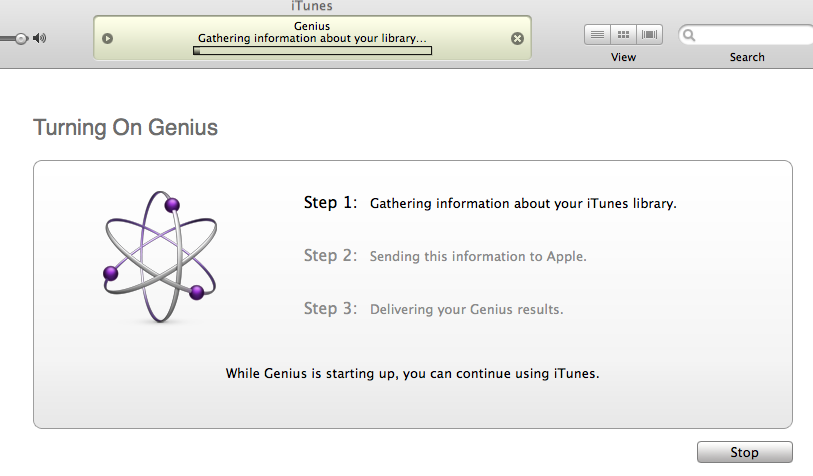

What is the iTunes genius doing?
Once you agree, the Genius goes through a 3 step process

I'm a bit puzzled about what the Genius is doing during this first step. I have about 10K songs in my iTunes library. The Genius took about a half hour to 'gather information' about my library. That's about 200 ms per track ... not enough time to do any kind of analysis (not even enough time to decode an MP3, let alone do any significant processing). iTunes already has a database containing all the info it needs. Perhaps it is calculating an item-item similarity matrix for my artists, albums and tracks before it sends the data off too the cloud. This would save Apple a lot of CPU cycles.
Once iTunes has finished gathering information about my library it sends it all to Apple and a few minutes later, Apple sends back my Genius results. Which means that I can now get recommendations for recommendations. More about the recommendations in the next post.

I don't use iTunes, but Erik showed me the genius feature today. He found several examples where the results didn't make sense, and some where the results were pretty good. Overall it seems Apple kept things nice and simple. I'm curious how Apple fans will respond to the new feature.
Posted by Elias on September 09, 2008 at 09:22 PM EDT #
Yeah, it seems to use comparisons from within the store -- what others bought who also bought the song that you chose. Seems to work pretty well, anyway, but not as well as Pandora.
Posted by John Dark on September 10, 2008 at 01:22 AM EDT #
Guano Apes with Juli? German groups alright, but they couldn't be more different. If there is only CF, that song puts you in touch with all German profiles. If there is some sort of CBF at artist-level they may need to adjust weights :)
Posted by luis on September 10, 2008 at 09:06 AM EDT #
I have been using iTunes since 4 and while I don't rely on it to make or choose songs for me, I can't see how much of a genius the Genius feature would be. I am the Genius!
Posted by BBoppie on September 10, 2008 at 09:14 AM EDT #
I would guess that iTunes Genius is doing some sort of collaborative filtering on your Music (along the lines or people who liked X also liked Y). Amazon have been doing it for year.
The great thing is that you can produce a very compact recommendation model in a relatively small amount of data that can then be uploaded to a handheld device (such as an IPod Touch). (This is based on my experiences working on CF for Net Perceptions several years ago)
The way that the Genius playlist feature on the Touch will refuse to produce recommendations for some tracks is very reminiscent.
I would expect that the quality and depth of recommendations will improve as more people make use of the genius feature, upload their playlists to Apple and this data is then processed and used to update iTunes.
Posted by Roger Hill on September 10, 2008 at 06:27 PM EDT #
I think Genius is a scam to get those of us who haven't got an iStore account to sign up so Apple can make more money from us. I was intrigued by the Genius playlist feature so I head on to the store to sign up. Then I read the ULA. Does anyone else think it's odd that you are locked in for life as soon as you sign up???
Here is the line that shocked me:
"The iTunes Store service commences immediately when you begin to download Products from the iTunes Store and YOU WILL NOT HAVE A RIGHT TO CANCEL YOUR CONTRACT once the service commences."
Not as bad as the Google Chrome ULA but sheeesh, I never expected this sort of thing from Apple!
Is Genius really worth it?
Not for me.
Posted by Max on September 11, 2008 at 12:32 AM EDT #
Its absolutely worth it. I plugged in the song Breakfast by the mattress by Kristoffer Ragnstam which is a recently discovered favorite song. (I found I loved it yesterday) And I have thousands of songs on my itunes I havn't even listened to yet. So I made a playlist from it and I love it, I'm finding other songs in my itunes that I love and havn't listened to yet. Then I have these playlists in my ipod so I can continue discovering my own itunes anywhere I go.
Posted by Adrienne on September 11, 2008 at 10:27 AM EDT #
my own test reveal that genius will include songs that are in your library that are not available in the itunes store in a mix but you cannot build mixes off of those songs, which is very interesting.
Posted by Jared Zimmerman on September 12, 2008 at 03:22 PM EDT #
Big scam! This is information mining at its worse. I have no use for this, or the embedded iTunes store. If anyone's figured out a way to disabled Genius, please post.
Once a critical mass of the market has been hooked on iTunes, and all their music assessed and inventoried, they are going to pull the rug and disable any use of music not properly licensed or purchased. Have a nice day!
Posted by Pedro Maldera on September 19, 2008 at 07:34 PM EDT #
Pedro:
How to disable it? Well, you can not turn it on in the first place (it's opt-in), or turn it off by selecting the option the Apple scammers cleverly disguised as "disable genius" on the store pull-down menu.
But they must be very clever blokes there at apple, if they figured out a way to distinguish illegal mp3s from the multitude of legal mp3 sources, and figured out a way to break mp3 files willy-nilly. What a big scam, indeed.
Posted by Flealick on September 21, 2008 at 12:12 PM EDT #
This is a potentially cool feature, but all the playlists I got out of it (when it worked) were not very good. Most of my library is NOT mainstream.
I cant believe that there is no listing for Oingo Boingo, Luther Allison, the Beach Boys and other more "popular" bands. Forget trying to make a list with the band known as the Beatles who was a little popular - maybe you've heard of them...
Yet by the same token, it DID create a plylist from more obscure bands (by mainstream preferences)such as the Nekromatics, BiGod 20 and Leatherstrip.
This makes NO sense what-so-ever. IMO this feature is broken and not worth using if you listen to music that is NOT listed on the iTunes store.
Posted by Hawk on September 22, 2008 at 07:54 PM EDT #
You guys ever considered that this is part of biggest music companies trying to get the people prosecuted for downloading music illegally? (come on every song u ever downloaded without paying for it is technically illegal.) Its funny that itunes 8 came out after biggest downloaders received letters saying they are being warned once... and some even been already prosecuted and fined.
I got 10k of music... thats pretty much 10grand worth if u count each track as a pound...
Once it sends info about ur music it has you IP.. hense your home adress... and probably will continue loggin if u switch networks or move houses or whatever. Just if u dont receive a letter now.. means u got lucky there are people that downloaded more music than u.
Also if i remember right.. there are plenty of cases where people sent info about their windows to microsoft and if it was illegal copy microsoft pretty much hacked and rended the hard drive useless.
Posted by Igor on September 28, 2008 at 05:14 PM EDT #
Genius works for some, not for others. It will no doubt be improved upon, so for all those whining about how it isnt good enough - dont use it.
Posted by Marc on October 02, 2008 at 07:46 AM EDT #
Igor - it's naive to think that Apple are going to contact your ISP with a court order to gain your personal details based on your IP address at a given moment in time just because you have a handful of MP3s that aren't strictly legal.
Microsoft and Apple will not "hack" anything as that would be illegal and corporations would get a significantly higher penalty for doing that than an individual. Also - the cost to them (not retail) of 1 copy of Windows versus the time and money it would take for an employee or contracter to do any form of malicious damage to an INDIVIDUAL is absurd.
Don't buy into all the scare tactics or into the hearsay.
Posted by Ben on October 05, 2008 at 09:26 AM EDT #